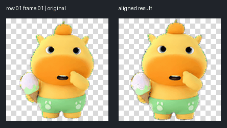
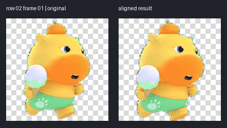
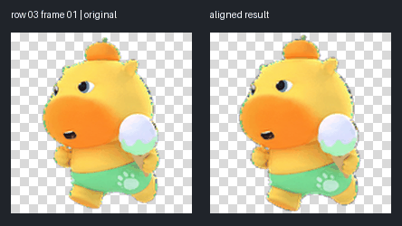
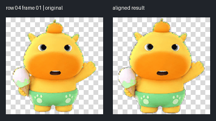
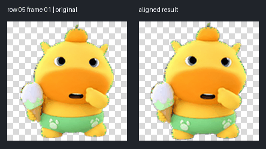
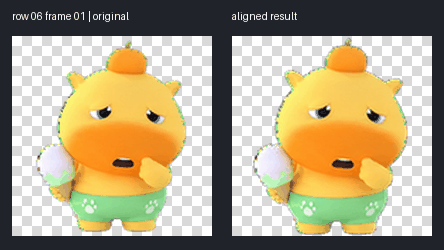
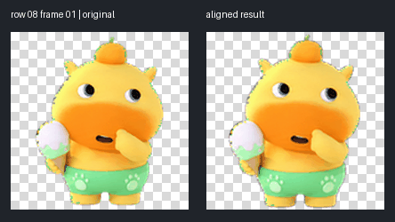
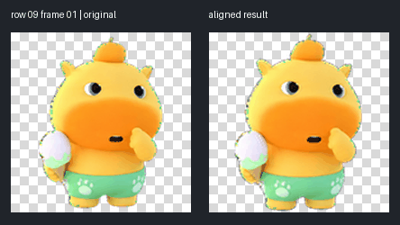

GIF 每帧 180 ms，仅为人工复查时长；源图未提供真实播放时长。
结果：C:/workspace/capylulu/artifacts/pet-qa/atlas-alignment-c0f71213/test-output/chroma-reconstructed.png · 报告：C:/workspace/capylulu/artifacts/pet-qa/atlas-alignment-c0f71213/test-output/qa-chroma/validation-report.json







